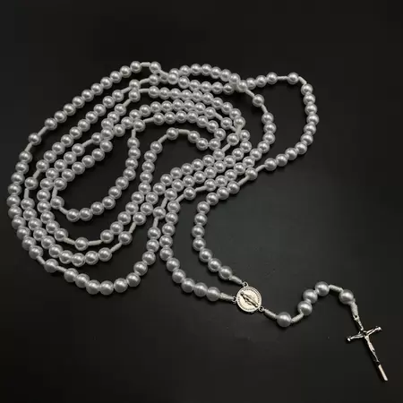
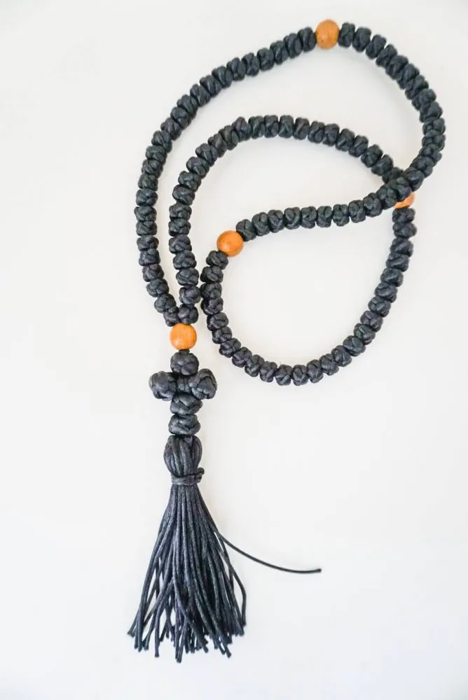

Rosário
O Santo Rosário é uma prática religiosa de devoção mariana muito difundida entre os católicos romanos, que o rezam tanto pública quanto individualmente. Consiste na recitação seriada de orações com o auxílio de uma corrente com contas ou nós, que recebe o mesmo nome.
Preço: R$50,00
O que é o Rosário
Chotki
Cordão de orações ortodoxo, segundo lendas, ele foi criado por Santo Antão do Egito. Ele o criou após descobrir que o demônio desatava os nós simples de seu cordão de oração, com o fim de evitar tal travessura do inimgo ele fez os nós em formato de Cruz para assim o evitar
Preço: R$50,00